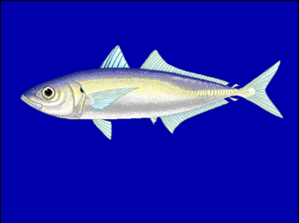

むろあじ（室鯵）の漁獲量 都道府県ランキング
1位から3位までと、とれた量
むろあじが日本でいちばん多くとれるのは宮崎県です。5,725 tで、全国（1万5,578 t）の37%を占めます。

| 順位 | 都道府県 | 漁獲量 | 全国に占める割合 |
|---|---|---|---|
| 1位 | 宮崎県 | 5,725 t | 37% |
| 2位 | 長崎県 | 1,972 t | 13% |
| 3位 | 高知県 | 1,807 t | 12% |
この数字について
- 分類：鯵の仲間
- 全国の漁獲量：1万5,578 t
- この数字が表すもの：漁獲量（海でとった重さ。養殖は含みません）
- 調査：海面漁業生産統計調査（海面漁業） 令和6年
- 29県分を調査（調査していない県は順位に入りません）
むろあじの漁獲量について、よくある質問
- むろあじの漁獲量が日本一の都道府県はどこですか？
- 宮崎県です。海面漁業生産統計調査（海面漁業）（令和6年）で5,725 tでした。
- むろあじの漁獲量ランキング2位・3位はどこですか？
- 2位は長崎県（1,972 t）、3位は高知県（1,807 t）です。
- むろあじの全国の漁獲量はどれくらいですか？
- 1万5,578 t（令和6年）です。